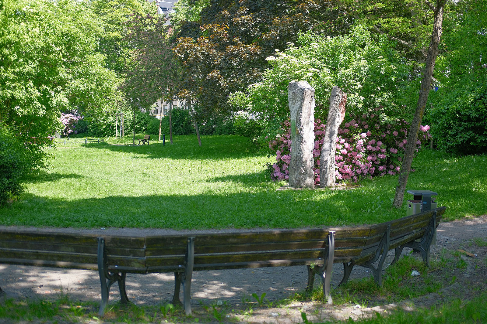
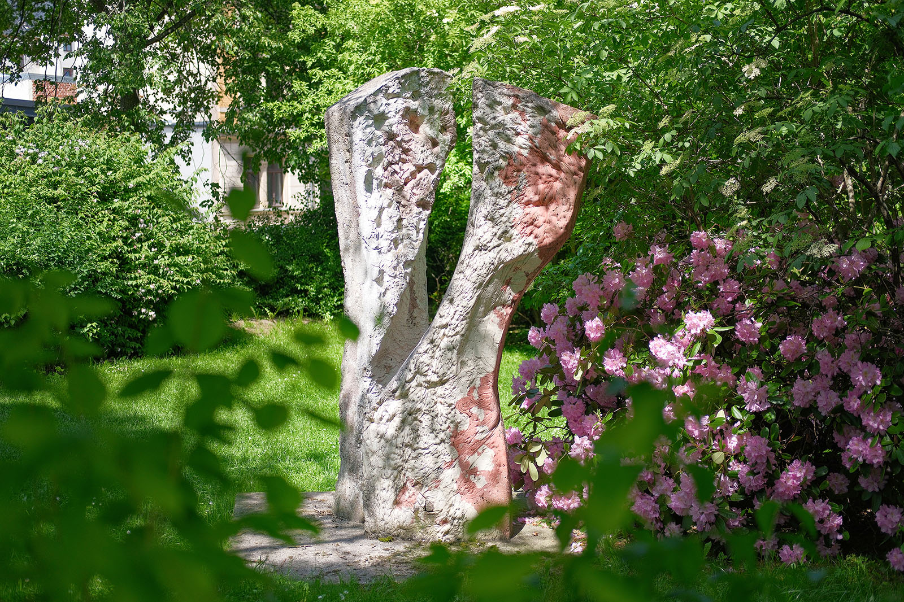
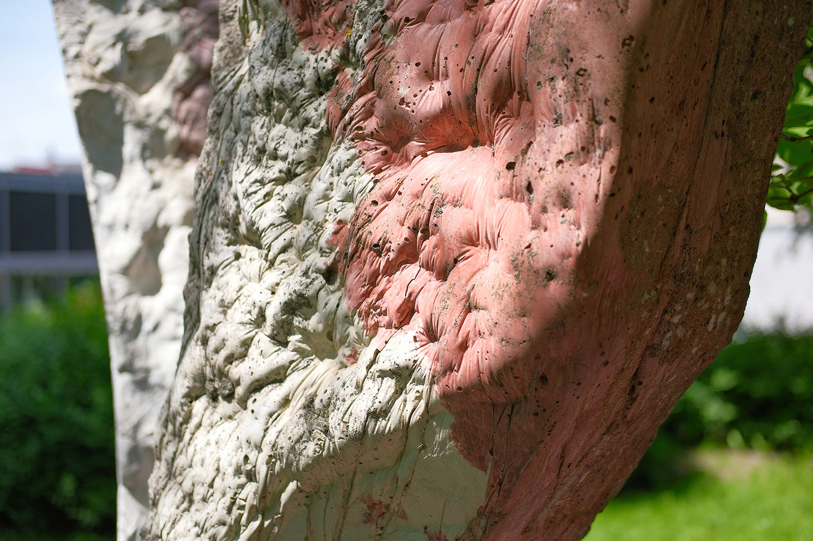
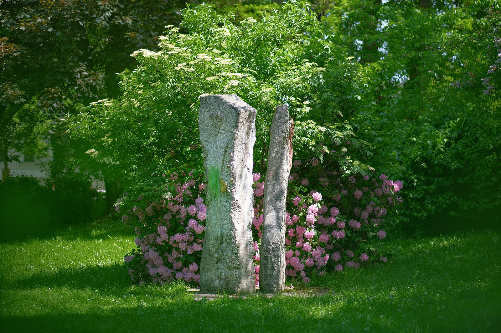

Recherche und Werkbeschreibung: Roman Pilz. Fotografien: Frank Krüger. Text und Bild wechseln sich wie in einem Magazin ab. Ein Klick auf ein Bild öffnet die Großansicht.
Nichts ist schwerer, als dem Werden und der Veränderung eine feste Form zu geben. Armin Forbrig gelingt das in seinen politischen Bildhauerarbeiten besonders gut. Als politisch engagierter Künstler und Bürger treibt er um das Jahr 1989 selbst den Wandel in seiner Heimatstadt voran und beginnt schnell, Sinnbilder für die tiefgreifenden gesellschaftlichen Umformungsprozesse zu suchen.
Armin Forbrig wurde 1937 in Chemnitz geboren und verstarb 2007 in Chemnitz. Forbrig absolvierte eine Ausbildung zum Steinmetz in der Werkstatt seines Vaters und erhielt 1959 seinen Meisterbrief. 1964 übernahm er den Familienbetrieb an der Warburgstraße, nahe des Städtischen Friedhofs.
Forbrig schulte sich als Künstler autodidaktisch. Bereits als Jugendlicher in den 1950er Jahren erhielt er Zeichenunterricht beim Chemnitzer Maler und Grafiker Rudi Gruner. Von 1962 bis 1965 studierte er, ohne regulär eingeschrieben zu sein, Schriftgestaltung bei Prof.
Albert Kapr an der HGB Leipzig. Seit 1966 war er Mitglied im Verband der Bildenden Künste der DDR. Seit Anfang der 1970er Jahre schuf Forbrig künstlerische Bildhauerarbeiten.
Neben figürlichen Arbeiten, die vor allem den Akt und die weibliche Figur in den Mittelpunkt stellen, entwirft er später auch symbolisch-allegorische und abstrakte Werke aus Stein. Die Zeichnung bildet immer den Ausgangspunkt seiner Schöpfungen. Als Grafiker widmete er sich dem Ausdrucksmittel der Schrift und experimentierte später mit den Möglichkeiten von Copy-Art und Computer-Kunst.
Forbrig reiste seit Anfang 1980 regelmäßig nach Rügen und arbeitete dort mit Künstlerkollegen unter freiem Himmel als Bildhauer. Im Umfeld der politischen Wende in der DDR engagierte sich Forbrig als Verbandsmitglied und Bürger für eine demokratische Erneuerung der Gesellschaft. Er war 1990 Gründungsmitglied und Vorsitzender des Chemnitzer Künstlerbundes und 1991 Gründungsmitglied beim Sächsischen Künstlerbund.
In beiden Verbänden arbeitete er lange Jahre als Vorstandsmitglied. Zuletzt war er von 1998 bis 2004 Vorsitzender des Künstlerbundes in Chemnitz. Die Grafiken Forbrigs wurden mehrfach auf internationalen Grafik-Biennalen ausgestellt.
Seine bildhauerischen Arbeiten wurden regelmäßig in Chemnitz und Sachsen sowie in Heidelberg, Koblenz und auf Rügen gezeigt. Eine Reihe seiner Arbeiten sind im öffentlichen Raum ausgestellt. In Chemnitz sind Skulpturen Forbrigs im Garten der Chemnitzer Volksbank an der Inneren Klosterstraße, in der Gasse "Am Rathaus", neben dem ehemaligen Galeria-Kaufhof-Gebäude und auf dem Zöllnerplatz zu sehen.
In der Neuen Sächsischen Galerie und weiteren öffentlichen und privaten Sammlungen befinden sich weitere Beispiele von Armin Forbrigs Schaffen.
Die Plastik "Kennzeichen D", die 1997 noch einfach "Einheit" betitelt war, verwirklicht dieses zentrale Thema der jüngeren deutschen Geschichte auf vielfältigen Ebenen - in Material, Form, Farbe, Titel und Kontext. Die Arbeit entstand 1997 und wurde im Rahmen des Skulpturenprojekts der Galerie Weise auf dem Chemnitzer Theaterplatz aufgestellt. Thema der seit 1993 organisierten Werktage war 1997 Beton als Material.
Forbrig formt und bearbeitet den Kunststein mit dem Leitgedanken der Dualität: zwei Farben, zwei Stelen und zwei Haltungen bilden ein Ganzes. Die Möglichkeit, dem Beton durch die Beigabe von färbenden Pigmenten den Anschein unterschiedlicher, ineinander amalgamierter Gesteinsarten zu geben, zeigt sinnbildlich, wie eine Nation aus unterschiedlichen Teilen erst geformt werden muss.
Wo beim Naturstein Äonen, Hitze und Druck erforderlich sind, um am Ende ein Mischgestein mit ganz eigenen Qualitäten zu schaffen, geht der Künstler schneller und konzeptionell zur Sache: Er wählt Rot und Weiß als farbliche Gegensätze und gießt den Stein so in zwei lange Formen, dass sich in ihrem Inneren das Bild von erratisch verlaufenden "Grenzlinien" entwickelt, so wie es für Deutschland bis zu seiner ersten Einigung 1871 kennzeichnend war.

Aus dem Boden, der durch ein quadratisches Fundament gebildet wird, wachsen die beiden Stelen etwa auf die Höhe eines groß gewachsenen Mannes heran und umspielen einander je unterschiedlich, abhängig von der Blickrichtung. Es gibt keine Schauseite, rundherum kann der Betrachter auf die mehr gerade und die im Bereich der "Hüfte" leicht weggebeugte Figur schauen - mal erscheinen sie als klar getrennte Körper mit zugegeben großer Ähnlichkeit, mal ist der Blick auf den Ursprung der Formen am Boden nicht ganz frei und die Formen scheinen wie zwei Zweige aus einer Wurzel zu sprießen. Wenn die beiden Triebe nun weiter und unbehindert weiterwachen, nähern sie sich dann wieder an?
Der sprechende Titel wurde vom Künstler wohl nach Abschluss des Projektes auf dem Theaterplatz 1998 vergeben. Eine Ausstellung im Wasserschloss Klaffenbach belegt den neuen Namen und erinnert Menschen, die im geteilten Deutschland lebten, wohl unweigerlich an eine politische Sendung des ZDF mit demselben Titel, welche von 1971 bis 2001 ausgestrahlt wurde. Idee des Formats war, unvoreingenommen die Realität der Menschen in der BRD und der DDR zu zeigen und so ausgehend von der neuen Entspannungspolitik unter Kanzler Willy Brandt die Einheit Deutschlands weniger durch Konfrontation als durch das Aufzeigen von Gemeinsamkeiten und Unterschieden zu bewirken.

Zu Beginn der Sendung war das Länderkennzeichen für beide Staaten noch das "D", das man fragmentarisch, mit viel Wohlwollen auch in den rauen, stellenweise geglätteten Flanken der Plastik lesen kann. Sicher ist, dass die eingängige Titelmelodie der Sendung, die Santanas Song "Waiting" entnommen wurde, auch den Komponisten Carl Friedrich Zöllner (1800-1860) inspiriert hätte, ist dieser doch dafür bekannt, sogar eine Speisekarte vertonen zu können.
Die Stadtwerke Chemnitz ermöglichten durch Ankauf und Schenkung des Werkes an die Stadt Chemnitz die Platzierung auf dem nach Zöllner benannten Platz, der von der Müllerstraße gekreuzt wird. Sie wird neben einem thematisch ähnlichen Werk in der Stadt Schwetzingen zu Forbigs ausdrucksstärksten politischen Arbeiten gezählt.

Ungleich vereint
Die Betonplastik „Kennzeichen D“ (1997/1999) von Armin Forbrig am Zöllnerplatz
